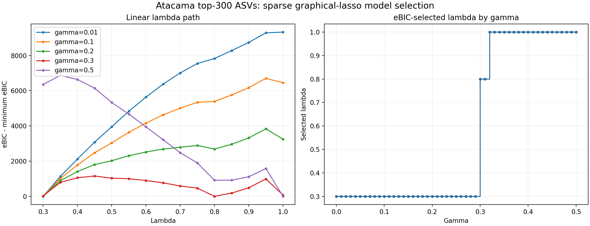
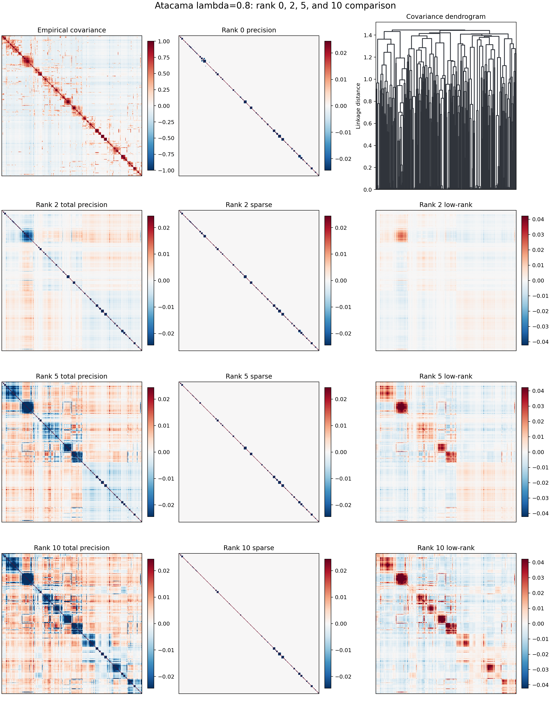
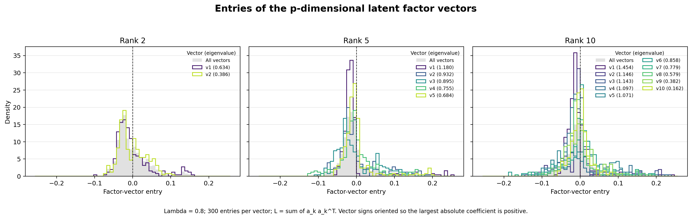

High-Dimensional Example: 300 Atacama ASVs#
The chapters above use a small 13-ASV subset to keep every step easy to follow. This chapter scales the same q2-gglasso workflow to a high-dimensional setting — the 300 most abundant ASVs across 54 samples of the Atacama soil microbiome — and selects the regularization parameters with an explicit model-selection criterion. It reproduces the reference analysis prepared by Christian L. Müller.
Data#
Starting from the full Atacama tutorial table, samples are matched and the
300 ASVs with the greatest total abundance are retained (\(n = 54\) samples,
\(p = 300\) features; the resulting table has 49,252 counts and is 5.9% non-zero).
The empirical correlation matrix of the mclr-transformed table
(atacama-top-300-correlation.qza) is the input to the graphical lasso.
Single graphical lasso: selecting \(\lambda\) with eBIC#
For a high-dimensional network we choose the sparsity penalty \(\lambda_1\) with
the extended Bayesian Information Criterion (eBIC). The extra parameter
\(\gamma \in [0, 1]\) controls how strongly extra edges are penalized: Foygel and
Drton use \(\gamma = 0.5\) as the conventional choice, while the small-example
default --p-gamma 0.01 is tailored to the toy table. For this analysis we use
a moderate \(\gamma = 0.3\), evaluated on a linear \(\lambda\) path
1.00, 0.95, …, 0.10:
qiime gglasso solve-problem \
--i-covariance-matrix atacama-top-300-correlation.qza \
--p-n-samples 54 \
--p-no-latent \
--p-lambda1-min 0.8 --p-lambda1-max 0.8 --p-n-lambda1 1 \
--p-gamma 0.3 \
--o-solution atacama-top-300-sgl-lambda0.8.qza
(The linear path itself is available with the new
--p-path-scale linear option, or by passing the exact grid via
--p-lambda1-path.)
Along this path the minimum eBIC of 16130.10 occurs at \(\lambda = 0.8\),
which defines the sparse network with 216 edges:

\(\lambda\) |
eBIC (\(\gamma=0.3\)) |
edges |
|---|---|---|
1.00 |
16200.00 |
0 |
0.95 |
17117.10 |
145 |
0.90 |
16619.90 |
152 |
0.85 |
16313.58 |
176 |
0.80 |
16130.10 |
216 |
0.75 |
16594.22 |
329 |
0.70 |
16719.57 |
429 |
The choice of \(\gamma\) matters: \(\gamma \in [0.30, 0.31]\) selects \(\lambda = 0.8\) (216 edges); \(\gamma \le 0.29\) selects the much denser \(\lambda = 0.3\) (1403 edges); and \(\gamma \ge 0.32\) selects the empty \(\lambda = 1.0\) network.
Sparse + low-rank: comparing ranks 2, 5 and 10#
At the selected \(\lambda = 0.8\) we add a low-rank latent component and compare
target ranks 2, 5 and 10. In the current release the rank is not set
directly; it is controlled through the low-rank penalty \(\mu_1\) (a larger
\(\mu_1\) yields a smaller rank). We therefore scout \(\mu_1\) until the fitted
rank(lowrank_) matches each target:
Model |
\(\mu_1\) |
sparse edges |
connected nodes |
|---|---|---|---|
Sparse only (rank 0) |
— |
216 |
163 |
Sparse + low-rank, rank 2 |
15.0 |
202 |
162 |
Sparse + low-rank, rank 5 |
10.0 |
158 |
124 |
Sparse + low-rank, rank 10 |
7.5 |
110 |
92 |
# rank 2 (mu1 = 15); repeat with mu1 = 10 for rank 5, mu1 = 7.5 for rank 10
qiime gglasso solve-problem \
--i-covariance-matrix atacama-top-300-correlation.qza \
--p-n-samples 54 \
--p-latent \
--p-lambda1-min 0.8 --p-lambda1-max 0.8 --p-n-lambda1 1 \
--p-mu1-min 15 --p-mu1-max 15 --p-n-mu1 1 \
--o-solution atacama-top-300-slr-lambda0.8-rank2.qza

Rank 2 is the parsimonious choice. Its two latent components already capture the dominant measured-covariate structure, while ranks 5 and 10 mostly add higher-dimensional detail. Across the downstream prediction tasks, the strength of each task’s association with the robust principal components tracks the energy of its log-contrast coefficients in the rank-2 latent subspace (Spearman \(\rho = 0.90\), \(p = 6\times10^{-5}\)), confirming that two latent dimensions are sufficient.
The low-rank component’s eigenvectors give per-ASV loadings on the latent axes:

Choosing \(\mu_1\) / the low-rank rank. Until q2-gglasso exposes an explicit
--p-rank(registered but currently guarded, pending upstream GGLasso support), select the rank indirectly: fit the SLR model for a few \(\mu_1\) values at the chosen \(\lambda\), read the achievedrank(lowrank_)from each solution, and keep the \(\mu_1\) that reaches your target rank. For this dataset that yields \(\mu_1 = 15, 10, 7.5\) for ranks \(2, 5, 10\), and rank 2 is enough.